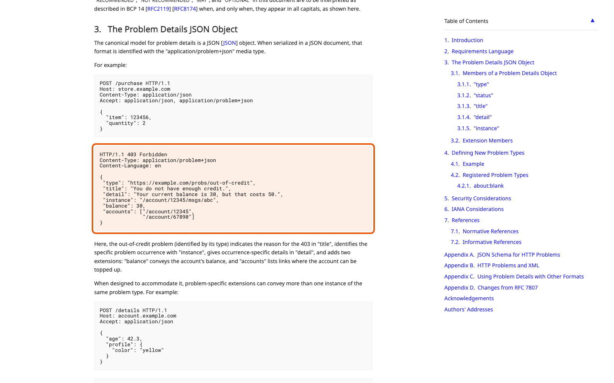
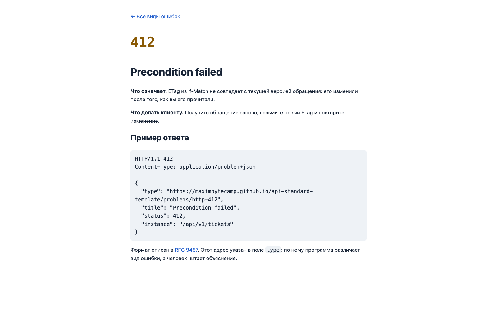

Справочник «Стандартизация HTTP API» · модуль 4 · Ошибки и устойчивость
Глава 4.1
Problem
Details
Кода состояния мало. 404 говорит «не найдено», но не говорит что именно, почему и что делать дальше. Ответ на этот вопрос описан стандартом: у ошибки есть свой формат тела, одинаковый для всех операций сервиса. В этой главе разберём его поля и посмотрим, как он устроен в учебном проекте.
- Категория
- Ошибки
- Уровень
- Базовый
- Связанные главы
- 2.3 Коды ответов · 4.2 Диагностика ответа · 3.3 FastAPI и OpenAPI
- Зачем это знать
- Чтобы клиент разбирал ошибки одним кодом, а не по-разному для каждой операции
§1Что не так с самодельными ошибками
В сервисе, где формат ошибки не задан, он складывается сам — и по-разному в каждом обработчике. Через год в одном API живут все четыре варианта сразу:
{"error": "not found"}
{"message": "Ticket 42 does not exist", "code": 1204}
{"ok": false, "errors": ["ticket_not_found"]}
Ticket not found # просто текст, без JSONКлиенту приходится писать разбор под каждую операцию, а при добавлении новой — выяснять опытным путём, какой из вариантов ему достался. Стандарт снимает эти вопросы: формат один и описан заранее.
§2Стандарт: RFC 9457
Problem Details for HTTP APIs — документ RFC 9457, статус Standards Track. Он описывает формат тела ответа для случая, когда что-то пошло не так, и набор полей этого тела.
RFC 9457, раздел 3.1.1Standards Track
«If the type URI is a locator (e.g., those with an "http" or "https" scheme), dereferencing it SHOULD provide human-readable documentation for the problem type (e.g., using HTML).»
Перевод. Если URI в поле type является адресом (например, со схемой http или https), то по этому адресу SHOULD открываться понятная человеку документация о виде проблемы, например HTML-страница.
Обратите внимание на ключевое слово SHOULD. Оно означает требование, от которого можно отступить, но отступление нужно обосновать. Уровни MUST, SHOULD и MAY разобраны в главе 6.1; здесь достаточно того, что несуществующий адрес в поле type стандарту не соответствует.

rfc-editor.org. Ссылку на конкретный раздел стандарта полезно класть прямо в свой API Style Guide — тогда спор о формате заканчивается открытием ссылки.§3Пять полей
Вот настоящий ответ учебного сервиса на изменение обращения с устаревшей версией:
{
"type": "https://maximbytecamp.github.io/api-standard-template/problems/http-412",
"title": "Precondition failed",
"status": 412,
"detail": "Ticket was changed after the version in If-Match was read",
"instance": "/api/v1/tickets/a8d04cb9-87ea-49b9-8ef6-ba10bbbad82b"
}title — про вид проблемы: «Precondition failed». detail — про случай: «версия в If-Match устарела». Если title у вас каждый раз разный, поля перепутаны местами, и клиент не сможет по нему группировать ошибки.
§4Media type application/problem+json
Тело ошибки отдаётся не с обычным application/json, а с особым типом application/problem+json. Смысл в том, что клиент понимает формат ещё до разбора тела: суффикс +json говорит «это JSON», а основа problem — «это ошибка по RFC 9457».
Content-Type: application/json- тело — схема ресурса
- разбирается моделью ресурса
Content-Type: application/problem+json- тело — схема ProblemDetails
- разбирается одной общей моделью
В учебном проекте это правило доведено до конца: все ответы 4xx и 5xx используют этот media type, и за этим следит тест из главы 3.3. Того же требует свод правил Zalando.
Zalando RESTful API Guidelines, правило 176 «MUST support problem JSON»правила компании
«every endpoints must be capable of returning a Problem JSON on client usage errors (4xx status codes) as well as server side processing errors (5xx status codes).»
Перевод. Каждый endpoint должен уметь возвращать Problem JSON как при ошибках использования со стороны клиента (коды 4xx), так и при ошибках обработки на сервере (коды 5xx).
§5Свои поля: ошибки проверки
Пяти полей хватает не всегда. Когда клиент прислал тело, не подходящее под схему, ему нужно знать не только «проверка не прошла», но и какое поле виновато. Стандарт это предусматривает: к пяти полям разрешено добавлять свои.
{
"type": "…/problems/http-422",
"title": "Validation error",
"status": 422,
"detail": "Request does not match the API contract",
"instance": "/api/v1/tickets",
"errors": [
{"loc": ["body", "title"], "msg": "String should have at least 3 characters", "type": "string_too_short"}
]
}Поле errors — собственное расширение проекта, и в этом нет нарушения: базовые пять полей на месте, клиент, который о расширении не знает, просто его не заметит. Внутри каждой записи — путь до поля (loc), человеческое пояснение (msg) и машинный код вида ошибки (type). Формы в интерфейсе подсвечивают проблемное поле именно по loc.
Добавлять поля можно, переопределять смысл базовых — нельзя. Если положить в status свой внутренний код ошибки вместо кода HTTP, ответ перестанет быть Problem Details, хотя внешне будет на него похож.
§6Страница вида проблемы
Вернёмся к требованию из §2: по адресу в поле type должна открываться документация. В учебном проекте такие страницы собираются из описания и публикуются на GitHub Pages — по одной на каждый вид проблемы.

problems/http-412. Открывается по тому самому адресу, что стоит в поле type ответа из §3. Разработчик клиента копирует адрес из ответа в браузер и читает, что делать, — без переписки с командой API.Такая страница отвечает на три вопроса: когда эта ошибка возникает, что она значит и что делать клиенту. Третий пункт важнее первых двух: для 412 ответ «перечитайте ресурс, возьмите новый ETag и повторите запрос», и это готовая инструкция, а не описание симптома.
Часто в поле type пишут что-нибудь вроде https://example.com/errors/not-found — адрес, которого не существует. Формально это допустимо (стандарт разрешает URI-идентификатор), но тогда теряется вся польза: разработчик клиента открывает адрес и попадает в никуда. Если публиковать страницы пока нечем, честнее использовать значение about:blank, которое стандарт прямо предусматривает для случая «дополнительной документации нет».
§7Как это устроено в коде
Формат задаётся в одном месте — модуль app/problems.py. Ни один обработчик операций не собирает тело ошибки сам.
PROBLEM_MEDIA_TYPE = "application/problem+json" PROBLEM_TYPE_BASE = os.getenv("API_PROBLEM_TYPE_BASE", "https://…/problems/") TITLES = {400: "Bad request", 401: "Authentication required", 403: "Operation forbidden", 404: "Resource not found", 412: "Precondition failed", 422: "Validation error", 429: "Too many requests", 500: "Internal server error", …} def problem(status, detail, instance, headers=None, **extra) -> JSONResponse: body = {"type": f"{PROBLEM_TYPE_BASE}http-{status}", "title": TITLES[status], "status": status} if detail: body["detail"] = detail body["instance"] = instance body.update(extra) return JSONResponse(body, status_code=status, headers=headers, media_type=PROBLEM_MEDIA_TYPE)
Дальше три обработчика перехватывают всё, что может случиться, и прогоняют через эту функцию:
HTTPException — то есть все ошибки, которые обработчики операций поднимают намеренно: 404, 403, 412.намеренныеerrors со списком проблемных полей.422500 с общей формулировкой.500Третий обработчик нужен для того, чтобы контракт соблюдался и при непредвиденной ошибке: без него необработанное исключение вернуло бы страницу с трассировкой и другим media type, то есть ответ, не соответствующий описанию.
§8Чего в ошибке быть не должно
Ошибка уходит наружу, и её содержимое видит кто угодно, включая того, кто ищет слабое место. Поэтому у обработчика 500 формулировка нарочно общая:
async def unhandled_exception_handler(request, exc) -> JSONResponse: # Traceback остаётся в логах сервера, клиент получает только публичное описание. request_id = getattr(request.state, "request_id", "-") logger.exception("Unhandled error on %s %s, request id %s", request.method, request.url.path, request_id) return problem(500, "Unexpected server error. The incident has been logged.", request.url.path)
Трассировка, SQL-запрос, имена внутренних сервисов, значения переменных. Всё, что нужно для разбора, и всё, чего не должен видеть посторонний.
Код 500, общая формулировка и заголовок X-Request-Id. По этому идентификатору запись в журнале находится за секунды.
Для такого разделения и нужен заголовок X-Request-Id: он остаётся у клиента и одновременно записан в журнале сервера. Подробно о нём — в главе 4.3.
Сообщение вида «duplicate key value violates unique constraint "users_email_key"» рассказывает постороннему и про СУБД, и про имя таблицы, и про наличие такого адреса в базе. Наружу должно уйти «Conflict», подробности — в журнал.
§9Как делают другие
| Кто | Формат ошибки | Особенность |
|---|---|---|
| Zalando | application/problem+json | Правило 176 требует Problem JSON от каждой операции |
| Azure | Своя структура {"error": {"code", "message"}} | Плюс заголовок x-ms-error-code с машинным кодом ошибки |
| GitHub | Своя структура {"message", "documentation_url"} | Ссылка на документацию прямо в теле — та же идея, что type в RFC 9457 |
| Учебный проект | application/problem+json | Плюс поле errors для ошибок проверки схемы |
Общее у всех четверых — формат один на весь API и в нём есть машиночитаемый признак вида ошибки. Расходятся только в написании. Поэтому при выборе формата решающим является не сравнение вариантов между собой, а то, записан ли выбранный формат в правилах проекта и соблюдают ли его все операции.
§10Частые ошибки
200 {"ok": false} ломает всё: кэш считает ответ успешным, клиентские библиотеки не поднимают исключение, мониторинг не видит сбоя.detail.about:blank.§11Проверьте себя
- Назовите пять полей Problem Details и скажите, какое из них читает программа, а какое — человек.
- Чем
titleотличается отdetail? Придумайте пару значений для ошибки «обращение уже закрыто». - Зачем нужен отдельный media type, если тело и так JSON?
- Что требует RFC 9457 от адреса в поле
typeи какое значение поставить, если документации ещё нет? - Почему поле
errorsне нарушает стандарт, а замена смысла поляstatus— нарушает? - Что должно попасть в ответ с кодом
500, а что — только в журнал сервера?
type — вид проблемыtitle — название видаstatus — код HTTPdetail — этот случайinstance — гдеapplication/problem+jsonдля всех 4xx и 5xxсвои поля — можноменять смысл базовых — нельзяRFC 9457Zalando 176Справочник «Стандартизация HTTP API» · модуль 4 · глава 4.1Макаров Максим Николаевич